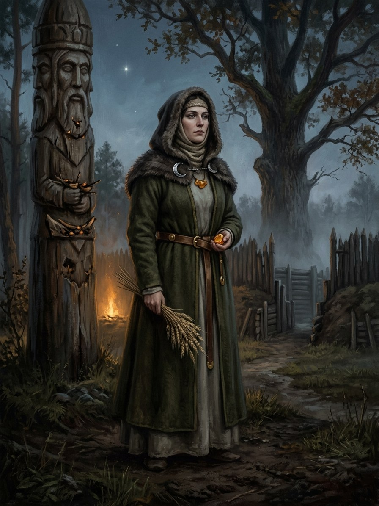

Aušrinė (the morning star)¶
Folk sources [Historical record]¶
Aušrinė is the morning star (Venus), in the mythological daina of the Moon’s marriage the one for whom Mėnuo leaves Saulė; Perkūnas cuts the Moon in two for it (legends §7). Old women say she was a child, village girls say she was a thief; she is never punished. Several variants make her Saulė’s or Dievas’s daughter.
Aušrinė (the morning star)

Aušrinė (the morning star) · god¶
Type |
god |
Note |
Morning Star; goddess of dawn, first celestial light, and beauty. |
In the saga¶
A figure of folk myth only: no domain, no element, no Force-face. She is the unpunished seducer of the saga’s law (the oath-breaker is cut, the seducer goes free), which Book II can use as a theme. She is linked to Mėnuo as the folk tale’s third party.
Offerings & taboos¶
No cult or offering is recorded.
Pronunciation¶
OW-shree-neh (stress AUŠ-ri-nė).
Relations
Ally: Mėnuo — Folk: the Moon leaves Saulė for Aušrinė.
Domain The morning star (Venus); the unpunished third party of the Moon's marriage
Layer God (Layer I) · Dangus; no element, no Force-face
Force-face None
Offerings None recorded
Taboos None recorded
Signs Rises before the Sun
Nothing. A figure of folk myth only. She does not act, speak or appear.
A theme. In the saga's law the oath-breaker is cut and the seducer goes free. Book II can use that (Jogaila is a Mėnuo, Jadvyga an Aušrinė).
Punishment. She is never punished.
None. The oath-breaker pays, not she.
Connections¶
graph LR
ausrine["Aušrinė (the morning star)"]
menuo["Mėnuo"]
menuo -->|Ally| ausrine
style ausrine stroke-width:3px